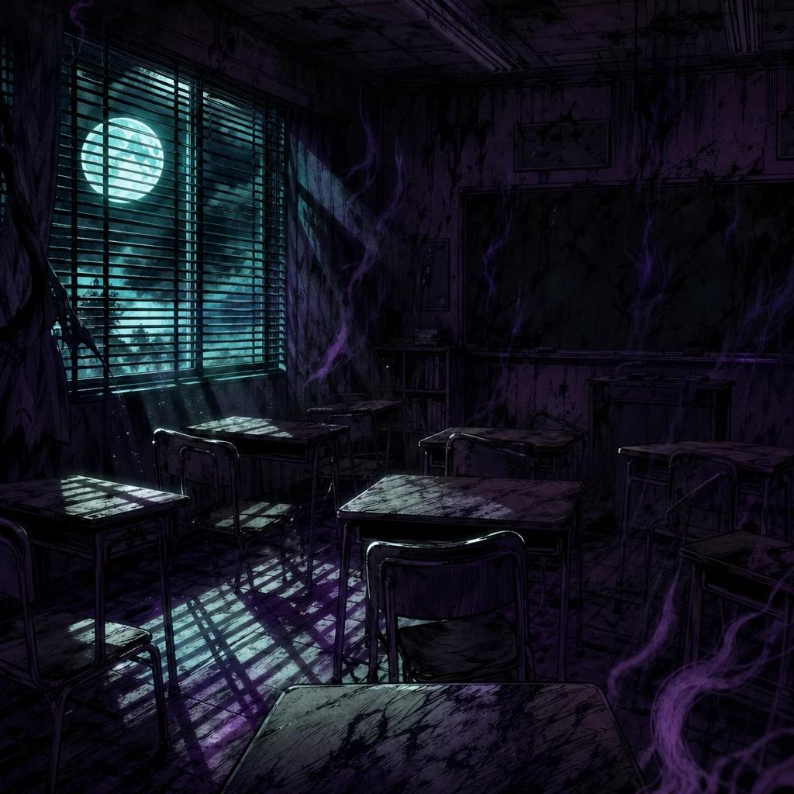

Horror
Room 404
A student discovers a classroom that should not exist.
Chapter 1: The Classroom That Wasn't There
Every evening, Mika took the same hallway on her way home. One rainy afternoon, she noticed a door marked Room 404. She had studied at the school for three years, but she had never seen it before.
Curious, Mika turned the handle. Inside, rows of empty desks faced a blackboard covered in names. The room smelled of dust, and the clock above the board had stopped at 4:04.
Then she saw her own name appear on the blackboard, written in chalk she could not see moving. Behind her, the door slowly clicked shut.
A whisper came from the last desk. “You're late, Mika. We've been waiting for you.”
Mika ran to the door and pulled it open. The hallway was back, bright and ordinary. But when she looked down at her hand, she found a small piece of white chalk—and on it, the number 404.
She knew she would have to return to discover who had written her name.